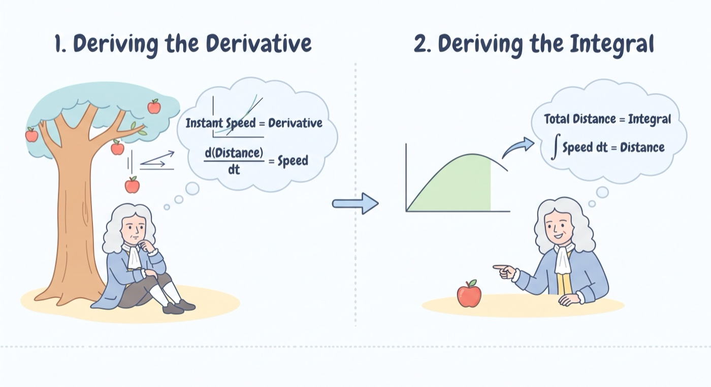
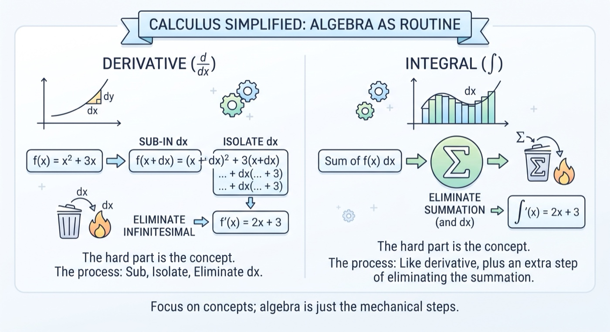
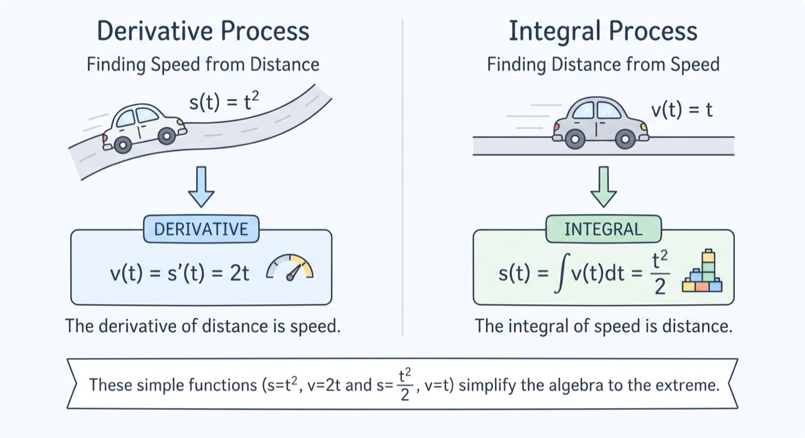
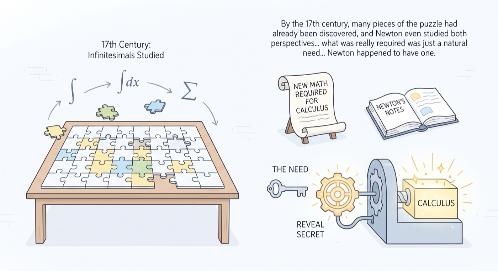
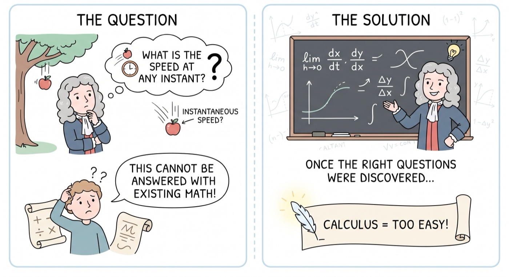
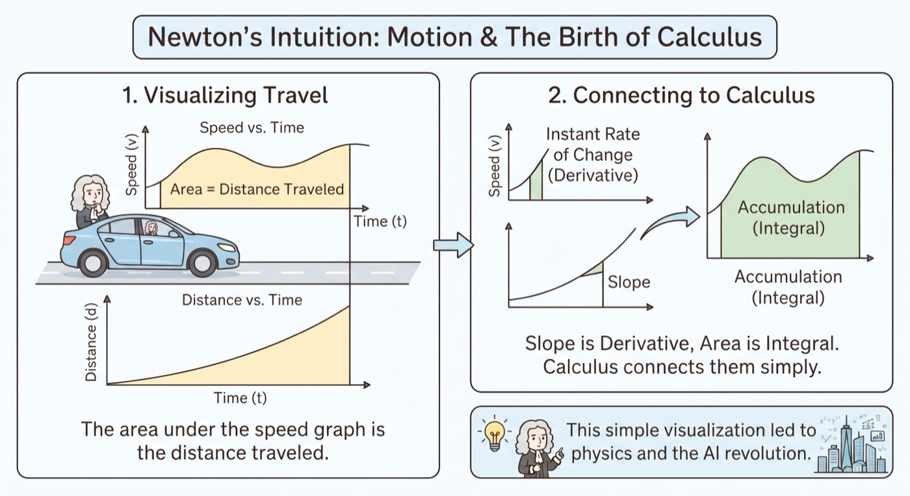
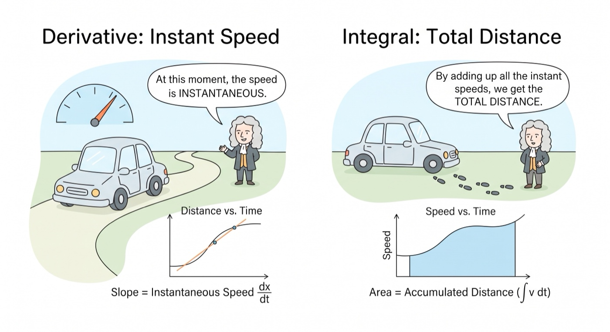
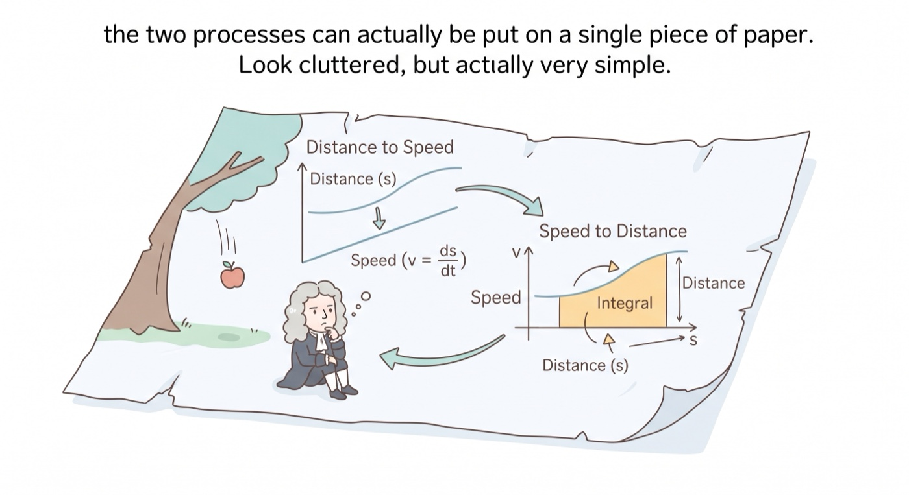
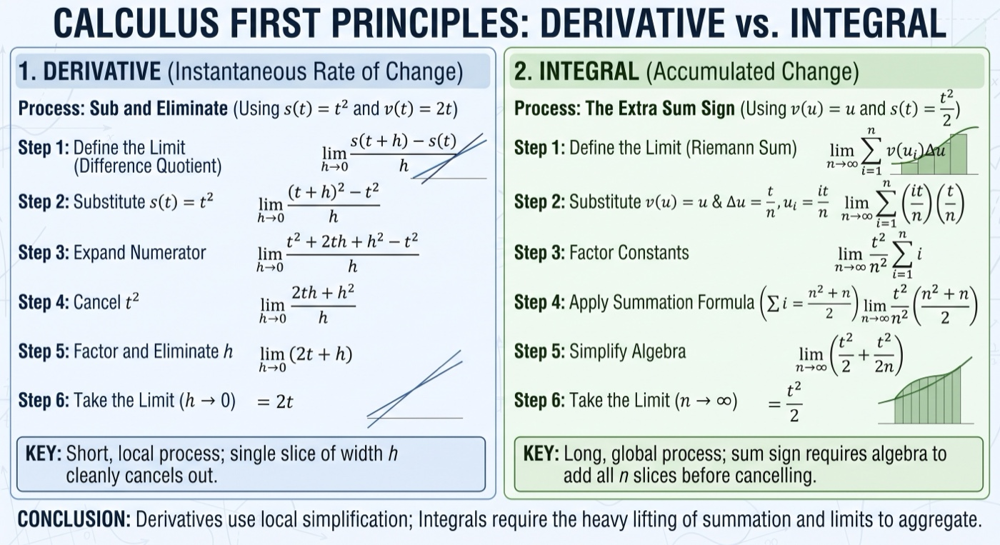

Calculus: The Simple Algebra Process | Sailin' N Voyages Series, Ep. 8
Calculus: The Simple Algebra Process
1 In this video, we will look at the simple algebra process to derive the derivative function, and then use the derivative function to derive the integral function back. This choice of deriving derivative first is natural, because in Newton’s case, the distance an apple has to fall was obvious, it’s the instant speed that started his thinking.
2 It’s simple because the conceptual part of calculus is the hardest, the algebra manipulation is just a straightforward “sub dx into the equation, isolate, and eliminate” process. With derivative, it’s literally just - sub-in, isolate, and eliminate an infinite small variable. With integral, the only difference is an extra summation sign to be eliminated.
3 In the derivative process, we’ll use the distance function s = t^2 and the speed function v = 2t as the integral and derivative function. In the integral process, we’ll use the distance function s = t^2 / 2 and the speed function v = t as the integral and derivative function. These choices are to help simplify the algebra manipulation process to the extreme.
4 By the 17th century, many pieces of the puzzle had already been discovered, and Newton even studied both perspectives of looking at infinitesimals in college, what was really required was just a natural need for new math as a tool to deal with problems that would reveal the secret of calculus. Newton happened to have one.
5 He was really into computing numbers, doing experiments which are hands-on physical in nature, and he was into motion problems. 6 The question Newton wanted to ask is, what is the speed at any instant when an apple is falling. This can not be answered with existing math. Once the right questions were discovered, calculus itself would almost look too easy.
7 For example, we always drive but never thought the area under the speed-time function is the distance traveled, and the difference on the distance-time function therefore is the area under the speed-time function. But once the thinking has started, the function graph plotted and visualized, it’s very plain to see the connection between area (which is integral) and instant rate of change (which is derivative). In terms of the math of calculus to deal with motion, it did not trouble Newton much. That’s probably the main reason he did not think too much about this new math, which became the reason we have modern physics and the modern AI revolution.
8 Using distance and speed time functions as an example is probably the best to illustrate the idea of calculus in any case, as we’re all familiar and have great intuition about speed and distance - which are instant rate of change and area respectively. Newton’s motion problem just happened to be about distance and speed. In this context, derivative is instance speed, and integral is distance which is the accumulation of all the instant speeds.
9 Since Newton would not have questioned the distance or integral first, because the distance the apple has to fall is pretty obvious. Therefore a natural starting point, from Newton's perspective, is to derive the speed function from distance function first. But in any case, the two processes can actually be put on a single piece of paper. Look cluttered, but actually very simple.
